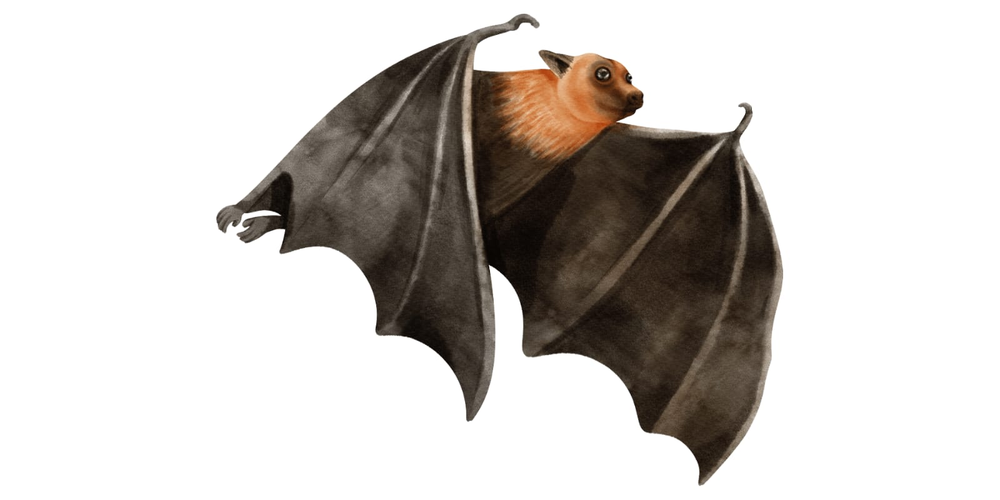
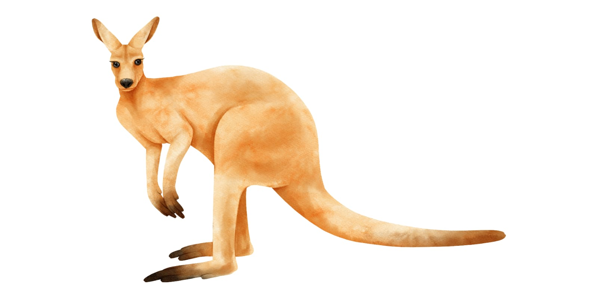
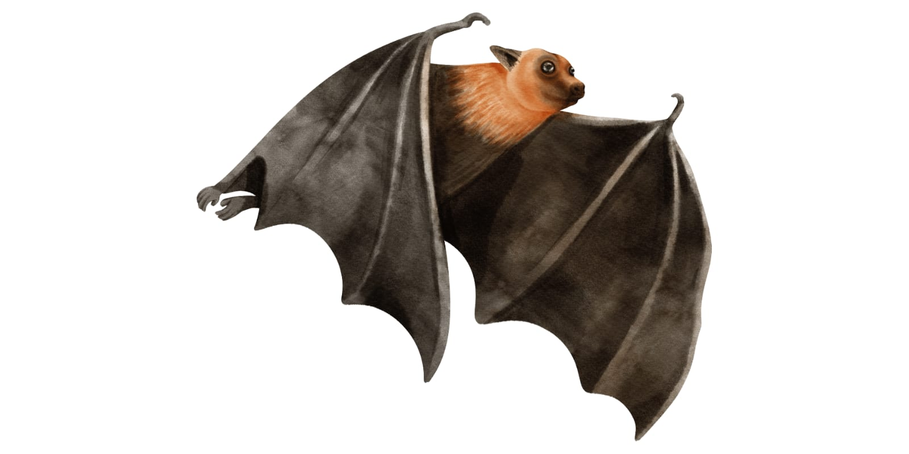
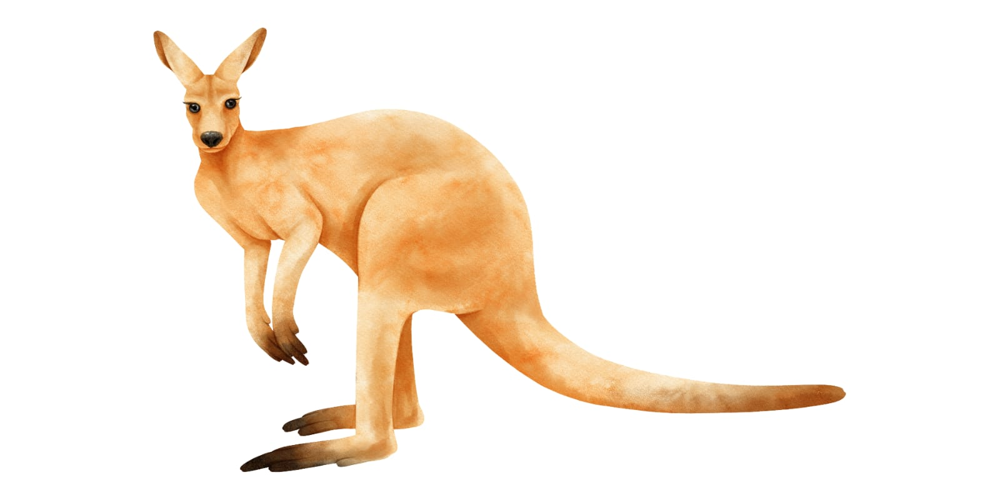
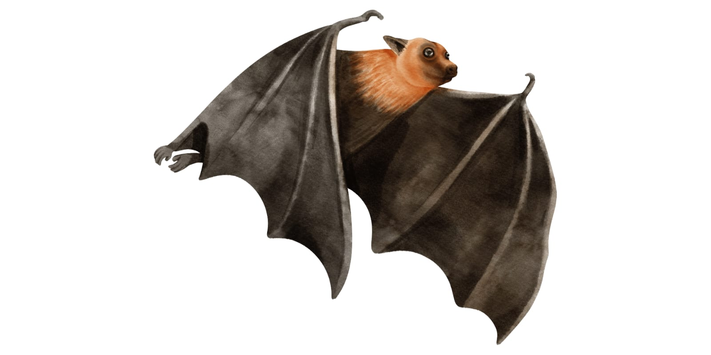
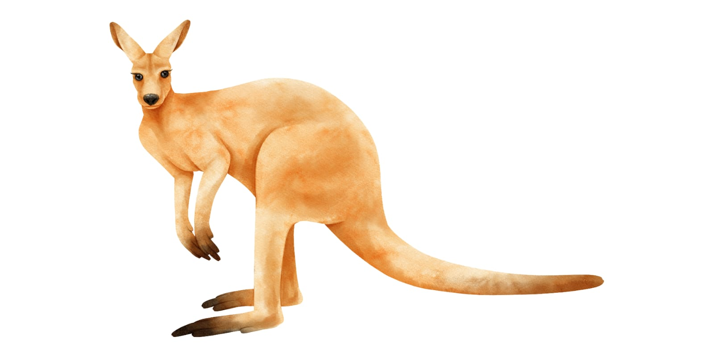
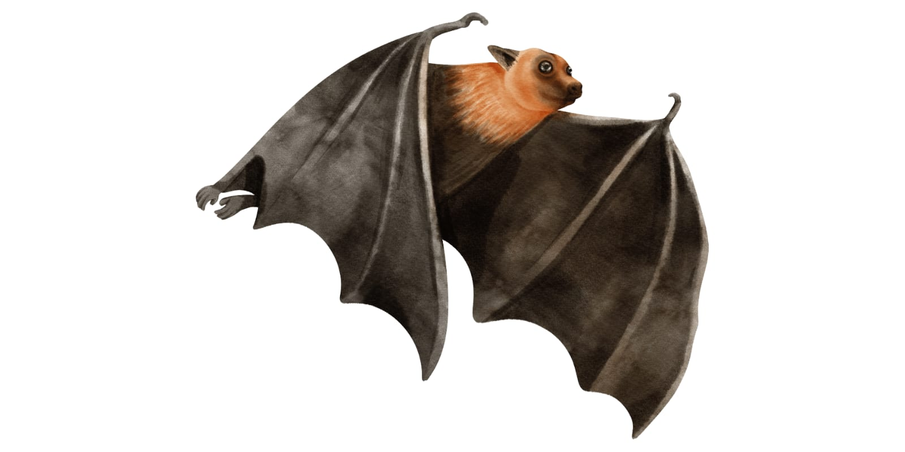
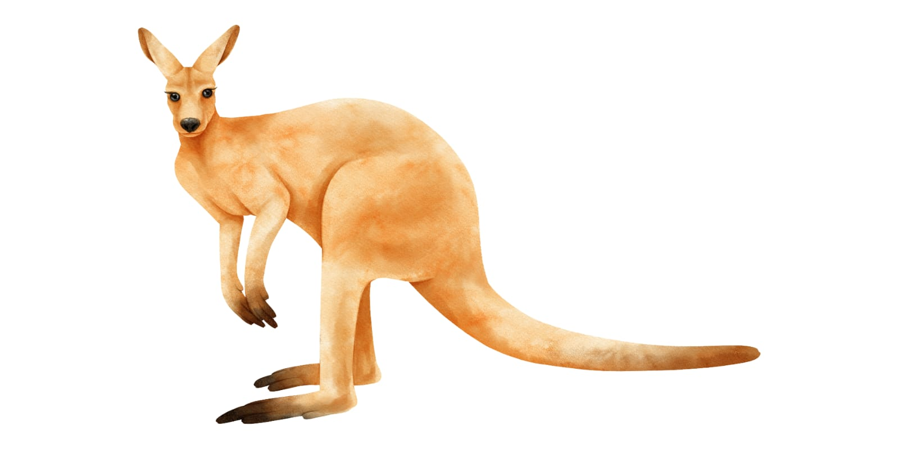

×
 



Contoh Mamalia


Mamalia adalah hewan yang memiliki kelenjar susu untuk menyusui anaknya, umumnya berbulu, dan bernapas dengan paru-paru. Sebagian besar mamalia melahirkan, meskipun ada yang bertelur seperti platipus. Contoh mamalia adalah sapi, kucing, harimau, gajah, dan orangutan. Mamalia berperan penting dalam menjaga keseimbangan ekosistem, baik sebagai pemakan tumbuhan maupun predator.
Reptil merupakan hewan melata yang memiliki kulit bersisik, berdarah dingin, dan berkembang biak dengan bertelur. Reptil biasanya hidup di darat maupun air dan dapat beradaptasi dengan lingkungan yang kering. Contoh reptil antara lain ular, kadal, buaya, dan komodo. Reptil berperan sebagai pengendali populasi hewan lain di alam.
Serangga adalah hewan kecil yang memiliki tubuh terbagi menjadi tiga bagian, yaitu kepala, dada, dan perut, serta umumnya memiliki enam kaki. Serangga berkembang biak dengan bertelur dan banyak yang mengalami metamorfosis. Contoh serangga adalah kupu-kupu, semut, lebah, nyamuk, dan belalang. Serangga memiliki peran penting seperti membantu penyerbukan tanaman dan menjadi bagian dari rantai makanan.

